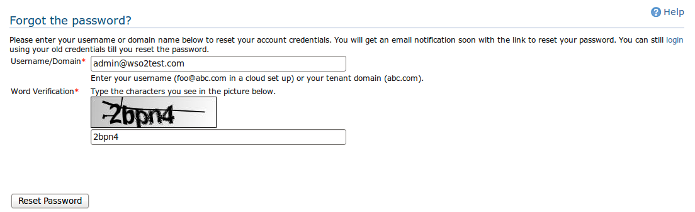
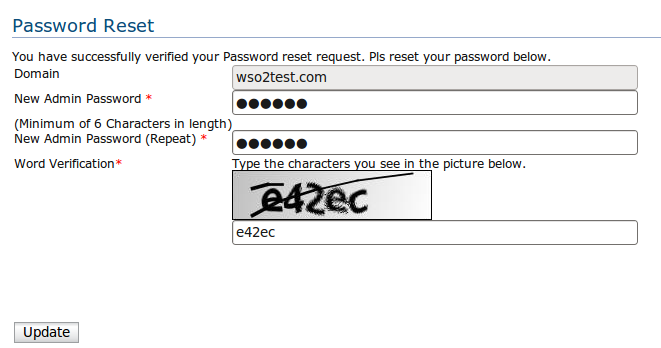

Have you forgotten the log in credentials of your account? Don't worry. You can use this password reset feature to reset the password of your account.
Once you provided your username or domain name of your tenant, an email will be sent to the email address attached to your account.
Using the link provided in the email notification, you will be able to change your password. Once you click the link, you are taken to a password reset form as given below.
You can login to your account from the login page using your new credentials after changing them.
If you have already click the link that post to you to configure your account, or if the link is expired, you won't be able to use it again. You may click the forgot password link below the sign-in again, in the log in page for another password reset request. Pls note, till you change your password using this form, your earlier password will not be changed. So you can still log in using your old password, till you change it here.